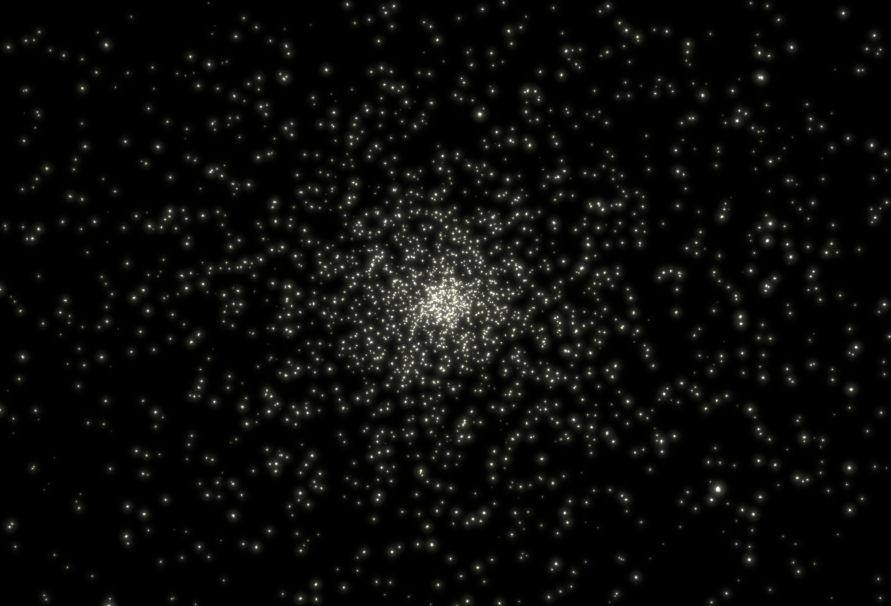

link to this page
Basics of the setting

For the most part, everything is located within or near the Spider Globular Cluster.
The Spider Cluster consists of approximately 10 thousand stars, adding up to roughly 8400 solar masses. The picture shown on the right presents it as seen from 140 light years away.
Terran life was brought to the cluster by Torpensoor, a superintelligence seeking to spread civilization across the cosmos at a rate very near to the speed of light about 95 years ago, or 3 gigaseconds in terms of the units more commonly used within the local civilization. Given such a short history there is still a lot of space for growth, and things are only just beginning to settle into place.
The cluster itself is located within the much larger, ever expanding sphere of civilization, locally known as the Stareater Expanse. Due to the cluster being at the very edge of it, riding the near-light-speed wave of expansion, not much is known about the vaster civilization yet, beyond the information which had been brought along by the original settler.
relevant pages
 settlement history of
settlement history of